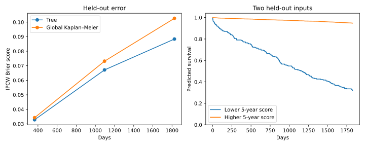

Survival trees in Python: FLCHAIN mortality follow-up¶
Use baseline measurements to estimate survival at one, three and five years. The event is death. If follow-up ends first, the row is right-censored.
1. Get the data and define the evaluation¶
The survival package's FLCHAIN cohort contains 7,874 people and right-censored follow-up. futime is follow-up in days and death=1 records a death. We use age, sex, kappa, lambda and creatinine as predictors. We exclude chapter, which describes cause of death and is unavailable at prediction time. Creatinine is missing for 943 of the 5,500 training records and 407 of the 2,374 test records; values enter the tree without imputation.
The snippet below gets the file with dataset_path("flchain_rdatasets"). It downloads the FLCHAIN CSV from Rdatasets on first use, caches it under ~/.cache/mltreelib/datasets/ (or MLTREELIB_DATA_DIR) and checks SHA-256 a96bcc58addb4c127e5012c5974aec8c7daf66123ddb104f309a78f158daa563. Run the shared real-data evaluation script.
Next: fit survival trees on the training rows defined in step 1, keeping each follow-up time paired with its death flag.
2. Fit leaf survival curves¶
futime is the time to death or last observation. Keep the event flag next to it. For example, someone censored at day 600 survived beyond day 365, but their status at day 1,095 is unknown. Do not replace the censored outcome with an event at day 600.
flowchart TD
subgraph TimeToEvent["Right-Censored Follow-up Mechanics (T_i, delta_i)"]
direction LR
Patient["Patient Baseline\n(Age, Biomarkers)"] --> FollowUp["Follow-up Period\n[0, T_i]"]
FollowUp --> Event{"Did Event Occur Before\nEnd of Study / Dropout?"}
Event -- "Yes (Event Observed)" --> Dead["delta_i = 1\nExact Event Time T_i"]
Event -- "No (Right-Censored)" --> Censored["delta_i = 0\nT_i is Lower Bound (T* > T_i)"]
end
Dead & Censored --> LogRank["Log-Rank / Martingale Split Criterion\nmax Q_LR(s)"]
LogRank --> KM["Terminal Leaf Estimators\nKaplan-Meier S(t) & Nelson-Aalen H(t)"]
classDef dataBox fill:#1e293b,stroke:#475569,stroke-width:2px,color:#ffffff;
classDef gateBox fill:#b45309,stroke:#d97706,stroke-width:2px,color:#ffffff;
classDef deadBox fill:#881337,stroke:#9f1239,stroke-width:2px,color:#ffffff;
classDef censBox fill:#1e3a5f,stroke:#2b4c7e,stroke-width:2px,color:#ffffff;
classDef splitBox fill:#0369a1,stroke:#0284c7,stroke-width:2px,color:#ffffff;
classDef leafBox fill:#065f46,stroke:#059669,stroke-width:2px,color:#ffffff;
class Patient,FollowUp dataBox;
class Event gateBox;
class Dead deadBox;
class Censored censBox;
class LogRank splitBox;
class KM leafBox;Run this Python block from the repository root. The evaluation helpers are defined in the block.
from bisect import bisect_left, bisect_right
from collections import Counter
import pandas as pd
from mltreelib import MetricsReport, ModelTree, dataset_path
from mltreelib.data import Dataset
def censor_km(times, events):
"""Censoring survival G(t), estimated from training observations."""
counts = Counter(times)
censored = Counter(t for t, event in zip(times, events) if not event)
at_risk, steps, probs, g = len(times), [], [], 1.0
for t in sorted(counts):
g *= 1 - censored[t] / at_risk
steps.append(t); probs.append(g); at_risk -= counts[t]
def g_at(t, left=False):
i = (bisect_left if left else bisect_right)(steps, t) - 1
return 1.0 if i < 0 else probs[i]
return g_at
def brier(times, events, predictions, horizon, censor):
"""IPCW Brier score at one horizon."""
g_h = censor(horizon)
total = 0.0
for t, e, pred in zip(times, events, predictions):
if t <= horizon and e:
total += pred ** 2 / censor(t, left=True)
elif t > horizon:
total += (1 - pred) ** 2 / g_h
return total / len(times)
df = pd.read_csv(dataset_path("flchain_rdatasets"))
features = ["age", "sex", "kappa", "lambda", "creatinine"]
ds = Dataset(
{k: df[k].tolist() for k in [*features, "futime", "death"]},
time="futime",
event="death",
features=features,
name="flchain",
)
# Seeded split: 5,500 rows train, the remaining rows test
train, test = ds.split(test_size=ds.n_rows - 5500, seed=2026)
t_train, e_train = train.time, train.event
t_test, e_test = test.time, test.event
grid = [365.0, 1095.0, 1825.0]
censor = censor_km(t_train, e_train)
print(f"Test rows {test.n_rows}: deaths {sum(e_test)}, censored {len(e_test) - sum(e_test)}")
for horizon in grid:
print(f"Horizon {horizon:.0f}: test at risk {sum(t > horizon for t in t_test)}, censoring survival {censor(horizon):.4f}")
miss_train = train.missing()["per_column"]["creatinine"]["n_missing"]
miss_test = test.missing()["per_column"]["creatinine"]["n_missing"]
print(f"Creatinine missing: {miss_train} training rows, {miss_test} test rows")
for depth in (0, 2):
tree = ModelTree(leaf_family="survival", max_depth=depth,
min_rows=100, prune="none")
tree.fit(train)
curves = tree.predict(test, kind="survival", times=grid)
risk = tree.predict(test, kind="risk")
rep = MetricsReport(
"survival", durations=t_test, events=e_test, risk=risk,
surv_curves=curves, times=grid,
)
print("depth", depth, "first survival curve", curves[0], "harrell_c", round(rep["harrell_c"], 4))
for j, horizon in enumerate(grid):
print(horizon, brier(t_test, e_test, [curve[j] for curve in curves],
horizon, censor))
print(tree.splits()[:1])
Test rows 2374: deaths 636, censored 1738
Horizon 365: test at risk 2288, censoring survival 0.9920
Horizon 1095: test at risk 2179, censoring survival 0.9813
Horizon 1825: test at risk 2064, censoring survival 0.9713
Creatinine missing: 943 training rows, 407 test rows
depth 0 first survival curve [0.964214236229244, 0.9186622130736849, 0.8760250322642885] harrell_c 0.5
365.0 0.029162166996877254
1095.0 0.06471126332180974
1825.0 0.10007346001380353
[]
depth 2 first survival curve [0.7161803713527852, 0.44129424875964646, 0.29187356453050306] harrell_c 0.6298
365.0 0.027422331820290472
1095.0 0.05658412808997147
1825.0 0.08055176917287096
[{'col': 'kappa', 'threshold': 1.82, 'missing_left': True, 'gain': 342113400.42157936}]
The depth-zero tree estimates one Kaplan–Meier curve for everyone. The deeper tree assigns a separate curve to each leaf. Inspect early and late horizons separately because each has a different set of known outcomes.
Next: compare the tree with the global baseline at one, three and five years, using the held-out Brier scores printed in step 2.
3. Interpret the held-out results¶
| Horizon, days | Test at risk | Censoring survival, training estimate | Tree IPCW Brier | Global baseline |
|---|---|---|---|---|
| 365 | 2,288 | 0.9920 | 0.0274 | 0.0292 |
| 1,095 | 2,179 | 0.9813 | 0.0566 | 0.0647 |
| 1,825 | 2,064 | 0.9713 | 0.0806 | 0.1001 |

The right panel shows two held-out feature rows routed through the training tree. They were selected by their predicted five-year survival, without using their outcomes. These are leaf estimates. The left panel measures error across all 2,374 test rows, which include 636 recorded deaths and 1,738 censored observations over the available follow-up.
The example uses a seeded random split and estimates the marginal censoring distribution from training data only. A marginal censoring model assumes censoring is independent of the outcome in the relevant population. This observational cohort and one split do not establish clinical usefulness. Check conditional censoring, calibration, discrimination and uncertainty with the intended deployment population before interpreting the comparison.
Next: repeat the Brier comparison on synthetic data where the true survival probability is known, because real individual survival probabilities are not observed.
4. Controlled check with synthetic truth¶
The survival and uplift evaluation script simulates 5,000 people. It fits 3,000 and evaluates 2,000 independent records, including 1,391 observed events and 609 censored observations. A global survival model provides the baseline.
| Horizon | Tree IPCW Brier | Global baseline IPCW Brier |
|---|---|---|
| 10 | 0.2417 | 0.2509 |
| 20 | 0.2000 | 0.2102 |
| 30 | 0.1226 | 0.1316 |

The Brier score compares predicted survival probabilities with event outcomes at a fixed horizon. Inverse probability of censoring weights (IPCW) account for records censored before that horizon. Lower is better. This simulation uses the known censoring distribution. Real data requires a justified censoring model estimated without using the test outcomes for model selection, adequate follow-up, and positive censoring survival at each evaluated horizon. Conditional censoring requires appropriate conditional weights; a single global curve can be wrong.
The script also compares predictions with the known synthetic survival probability. Real individual survival probabilities are not observed. Check discrimination and horizon-specific calibration on real held-out data, with uncertainty and risk-set sizes. This example implements the evaluation calculation locally; it does not claim an IPCW metric API exists in the package. See Graf et al. (1999).
Next: the last step extends the single-event setup to several causes, because follow-up data often has more than one way for the event to occur and the single-event comparison above does not describe that.
5. Competing risks and multi-cause endpoints¶
When subjects can experience mutually exclusive event causes (e.g. disease relapse vs treatment-related mortality), treating competing events as ordinary censoring violates the independent censoring assumption and overestimates cumulative incidence by 20–50%.
mltreelib implements native competing risks trees:
- Split Criterion: Gray's subdistribution log-rank test (gain="gray", target_cause=j) maintaining subjects who experienced competing events in the risk set.
- Leaf Estimators: Aalen-Johansen multi-state estimator guaranteeing the probability simplex identity: \(\sum_{c=1}^J \hat{F}_c(t) + \hat{S}(t) = 1.0\).
- Unified Prediction API: tree.predict(X, kind="cif", times=times, cause=1) and tree.predict(X, kind="risk").
- Validation: MetricsReport("competing_risks", ...) computing cause-specific Harrell's C, Uno's IPCW C-index, and time-dependent Brier scores.
from mltreelib import MetricsReport, ModelTree
# Events: 0 = censored, 1 = relapse (primary), 2 = toxicity (competing)
tree = ModelTree(max_depth=3, min_rows=25, gain="gray", target_cause=1)
tree.fit(X_train, (durations_train, events_train))
# Evaluate Aalen-Johansen CIF at specified horizons
times = [2.0, 5.0, 10.0, 20.0]
cif_cause1 = tree.predict(X_test, kind="cif", times=times, cause=1)
cif_cause2 = tree.predict(X_test, kind="cif", times=times, cause=2)
# Compute full IPCW competing risks performance report
rep = MetricsReport(
"competing_risks",
durations=durations_test,
events=events_test,
cif_curves={1: cif_cause1, 2: cif_cause2},
times=times,
)
print(rep)
Subject IDs and grouped observations¶
When a clinical dataset carries a subject identifier or clinic group (id_col or group_col), pass it to fit so the tree never splits on an identifier (train_ids=False, train_groups=False by default). You can still pass the full table to leaf_samples(x, id_col=...) to list which subjects fall into each leaf, or set train_ids=True / train_groups=True only when you intend the model to split on them.
from mltreelib import ModelTree
rows = [
["p1", 62.0, 1.2], ["p2", 55.0, 0.8], ["p3", 71.0, 2.1], ["p4", 49.0, 0.7],
["p5", 66.0, 1.6], ["p6", 58.0, 1.0], ["p7", 74.0, 2.4], ["p8", 52.0, 0.9],
]
durations = [120.0, 310.0, 80.0, 400.0, 150.0, 290.0, 60.0, 350.0]
events = [1, 0, 1, 0, 1, 0, 1, 0]
tree = ModelTree(gain="logrank", max_depth=2, min_rows=3)
tree.fit(rows, (durations, events), id_col="patient_id", col_names=["patient_id", "age", "biomarker"])
print("Split columns:", [s["col"] for s in tree.splits()])
print("Leaf samples:", tree.leaf_samples(rows, id_col="patient_id", col_names=["patient_id", "age", "biomarker"]))
Next steps and references¶
Survival trees · Kaplan and Meier (1958) · Aalen (1978) · Gray (1988)